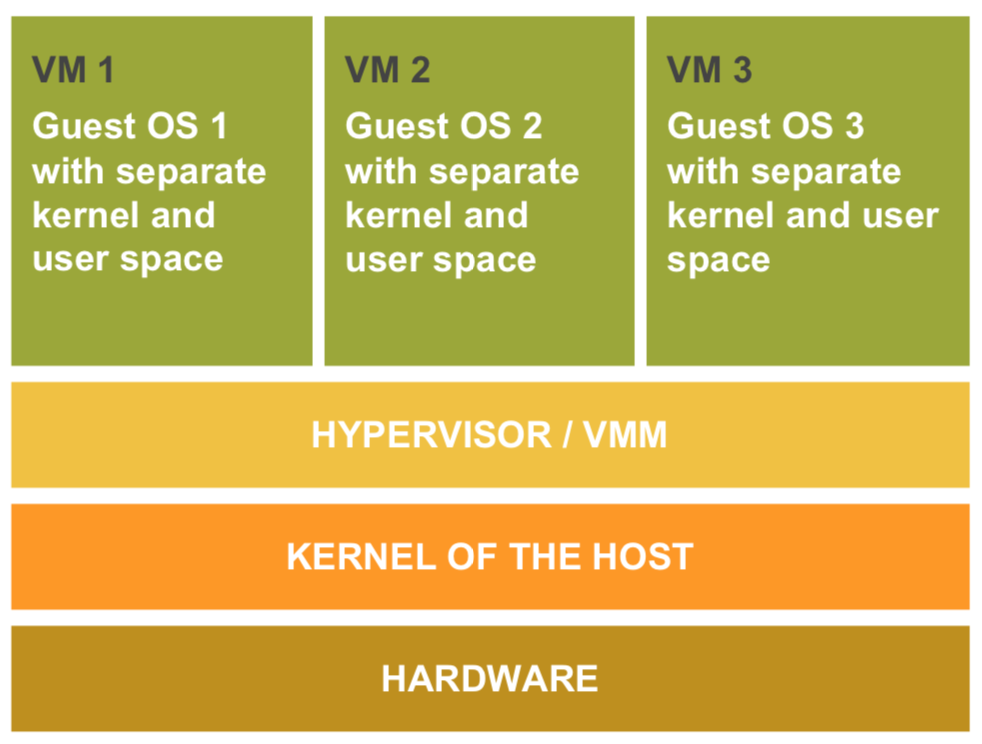
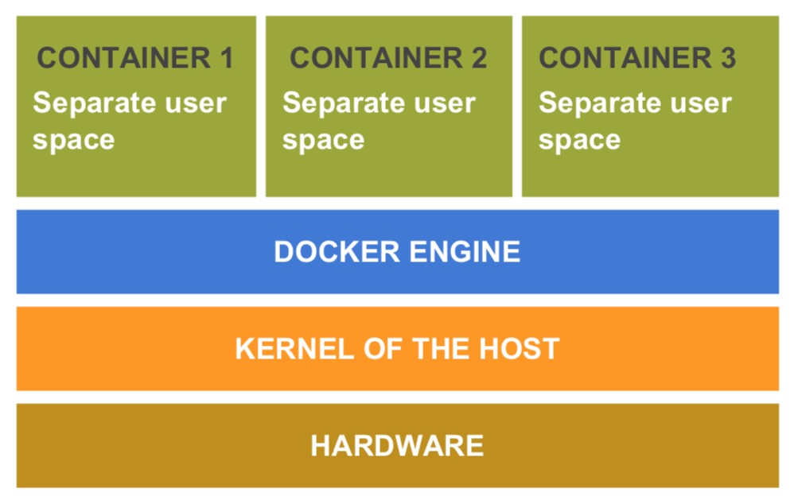
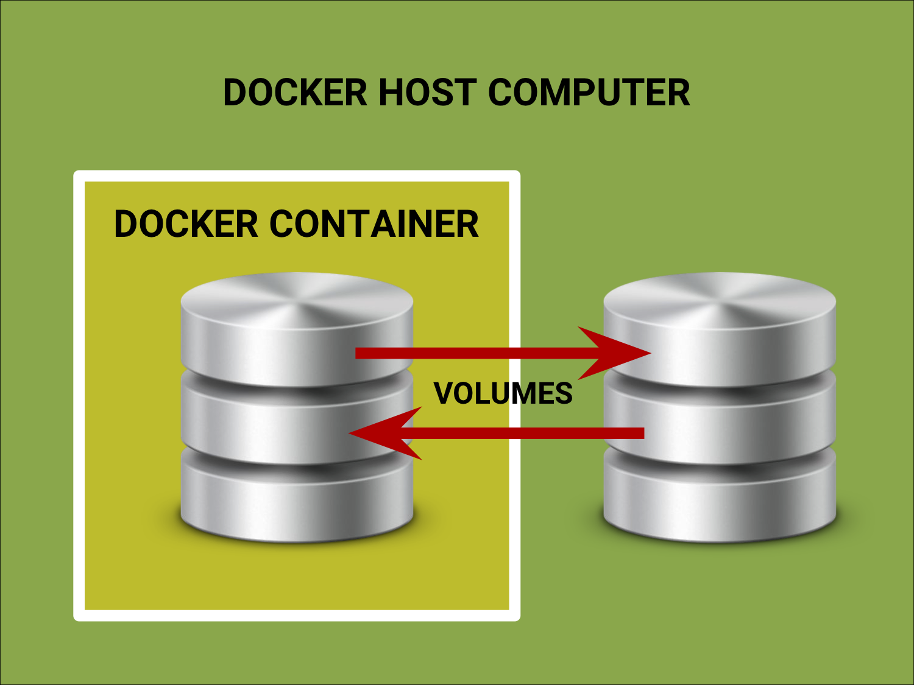

What is Docker?

- Docker is a tool that helps us build, deploy and run applications within isolated environments called Containers.
- This presentation will give us a brief overview of the different terms used in Docker and how they fit together.
- Containers allow us to package up an application with all the parts and tools it needs.
- Once packaged, we can rest assured that our application will run on any other Linux machine.
- Currently, containers can be built to run in either a Linux or a Windows operating system.
- Docker Containers are similar to VMs in that they both create isolated environments.
What is a VM?
- A VM or Virtual Machine is an emulation of a computer system; it imitates dedicated hardware.
- Like Docker, the virtual machine is sandboxed from the rest of the system, meaning that the software inside a virtual machine can’t escape or tamper with the computer itself.
-

- However, unlike Docker, a hypervisor or virtual machine monitor (VMM) sits between the hardware and the VM and is necessary to virtualize the server.
- This hypervisor creates and runs virtual machines, and each VM has its own full Guest OS and kernel.
What is the Kernel?
- The kernel is a running software process that governs access between the programs that run on a computer and the physical hardware it is built of.
- Every OS has a kernel
- When an application wants to save a file to the hard drive, the kernel is responsible for taking that file and persisting it to the hard disk.
- Unlike VMs, Docker allows applications to share the same Linux kernel as the system they're running on.
- It then allocates different segments of the hard disk, and CPU resources, when each isolated environment or container is created.
VMs vs Docker:
- Therefore, unlike VMs, Docker Containers do not create an entire virtual operating system.
- Since VMs need to boot a full OS, starting, say 50 VMs would take much longer than starting the same number of containers that can do this work in subsecond time.
- Docker accomplishes this by using layers and caching, which we will see more of a bit of later.
- Containers thus use far fewer resources
- They can also be spun up and down far more quickly and with less overhead
- This allows for a significant performance boost
Downloading Docker
- To work in Docker we will need to download
Docker Community Edition (CE) from the website. - We can do this by going to the
Docker Docs, https://docs.docker.com - Once installed, we can check for docker by typing
docker version in terminal.
- Use the Docker CLI and Server tools in terminal.
- Create a Dockerfile.
- And add it to a project to Dockerize it.
We are now ready to:
- When we download the Docker CE (Community Edition) package, we get a CLI utility, called the Docker Client
- We can use this Docker Client to build and run a Docker project.
The Docker CLI Tool
- We can use the Docker CLI to issue commands and send them to the Docker Server.
- The Docker Server or Docker Daemon in turn does the work of executing these commands.
- It creates images, runs containers, maps ports, etc.
- In other words, we use the Docker CLI to communicate with the Docker Server.
The Docker Server
The Dockerfile
- The Dockerfile is a file that contains a list of instructions to set up a container.
- These are commands a user could successively call on the command line to assemble a project if they were manually creating the project.
- Dockerfiles can be created from scratch or they can be found on Docker Hub.
- The Dockerfile should be added to the root of the project.
- Dockerfiles can be used as parent images to provide a basic framework for other dockerfiles.
What is Docker Hub?
- One of the greatest advantages of Docker is that it is open source.
- Docker has its own repository/Dockerfile registry at Docker Hub
- It is located at: https://hub.docker.com
- Link to code repositories.
- Build our images and test them.
- Store manually pushed images.
- And link to Docker Cloud so we can deploy images to our hosts.
Docker Hub is a cloud-based registry service that allows us to:
- Container image discovery.
- Distribution and change management.
- User and team collaboration.
- And workflow automation throughout the development pipeline.
It provides a centralized resource for:
- We can use any of the Dockerfiles in the
Docker Hub repo to build our project. - Or we can create our own Dockerfile.
- And we can push it to the Docker Hub for
others to use if we want to make it public.
- We'll start out by using one of these readily available Dockerfiles as an example.
- If we search for nginx, we should be able to find multiple repositories for nginx dockerfiles.
- We can use one of these but since they are out of the box solutions, we might want to eventually build our own.
- Once we have located or created a Dockerfile we can build a Docker Image
- To do this we can either pull an image from an existing Dockerfile on Docker Hub: docker pull nginx:latest
- Or we can use the CLI to run commands and build an image from our own Dockerfile.
What is a Docker Image?
- A Docker Image is an inert snapshot of a docker container.
- We can view a list of local Docker images by running docker images.
- Each image consists of multiple read-only layers, each of which represents a Dockerfile instruction.
- Images are immutable. If any changes need to be made to the configuration of an image (and/or if changes need to be made to the resulting container), the image needs to be rebuilt from scratch after editing the Dockerfile’s instructions.
Creating a Docker Container
- Once we have pulled or built a Docker Image,
we can run it to create the Docker Container. - We can do this by executing the docker run command.
- We can give the docker run command various flags.
- -i for interactive
- -t for an identifiable tagname
- -p for port
- -d for detached mode
- --name gives the container a name
Some flags include:
docker run --name my-nginx -p 3000:80 nginx:latest
will run the command on port 3000 in the foreground
docker run --name my-nginx -d -p 3000:80 nginx:latest
will run it in detached mode, on port 3000 in the background
- We can now navigate to localhost:3000
to see that our container is up and running. - We can also view our running containers
by entering docker ps in terminal. - To see all containers, we can run docker ps -a
- Once a container is created, we can start and stop it by running docker start my-nginx and docker stop my-nginx.
- A container can be removed by typing
docker rm my-nginx. - An image can be removed by typing
docker rmi nginx:latest.
- We can also use this process to create
a container from our very own Dockerfile. - Here is a Dockerfile I used for an Elixir-Phoenix-React project.
- We'll look at creating a container using this repo that I git cloned earlier.
- The first line in a Dockerfile is always the FROM instruction.
- This FROM instruction uses another Dockerfile as the base instruction.
- Note that I did not use the Elixir:latest base image. This was to avoid version changes and subsequent incompatibilities when creating containers in the future.
- If we do a search for Elixir on Dockerhub, we can see that the latest version of Elixir on Docker Hub is 1.7.4.
- This would be the version pulled if we set the FROM line to latest, not 1.7.1 as is the case in our image.
- Also on a side note, it's good to keep in mind that some of the more lightweight container versions on Dockerhub with tags like Alpine will forgo utilities such as Bash and include only the bare essentials in order to keep the size to a minimum.
- Other lines in this Dockerfile include installing
Phoenix, and Node for React. - The apt-get lines are responsible for installing Linux dependencies
-
It also includes lines responsible for:
- The creation of a working directory and cding into it,
- Exposing port 4000,
- And finally a CMD or Entrypoint line.
- This final command here tells Elixir's Mix utility to run a server.
- Either a CMD or Entrypoint instruction is always required as the last line of a Dockerfile.
CMD ["mix", "phx.server"]
Are we ready to build our container yet?
- Well, before we build our container, we need to set up things like our databases.
- And an important point we'll be facing in a second
is that containers are stateless.
- Because of this, we need a place to put our data.
- We will not be putting it directly in our containers.
- We'll see how data outside our container can
be mapped into our container with the help
of volumes.
What are Volumes?
- Volumes are the preferred way to persist data in Docker containers and services. 
- By using volumes, we tell Docker that whatever is included within the specified files in our local project should be continuously copied, mapped to and synced with an allocated directory in our container.
- Volumes are managed by Docker and are isolated from the core functionality of the host machine.
- So how do we set up our Postgres Database,
- Add data to our tables, and
- Set up volumes in order to add data to our containers?
- We'll use a Docker Compose file to do this.
What is the Docker Compose file?
- It is a yml file that specifies all the dependencies that our app will need to run.
- It includes the app and db services.
- Also we can now set our port in here.
- The volumes line says that everything in our local src folder will be mapped to the app folder in our container.
- We supply our app with login credentials in order to connect to the db.
- We also tell our app that it depends on the db. This line ensures that the db container will be started before the app container.
- In the next section we can see that the db service is created using Postgres 10 as a base image.
- Here, if we have concerns about securing confidential information we can use a secrets file.
- And we can see the path to where the db data will be stored.
- In essence, our Docker workflow should be:
- To build a Dockerfile for each image we wish to create
- And then to use Docker Compose to assemble the images using the build command.
Creating and Running
our Containers
- Instead of using docker pull we can now run
docker build -t my-demo .
in the directory that contains our Dockerfile
in order to build our image. - The Docker daemon runs the instructions in the Dockerfile one-by-one.
- Each instruction is run independently,
and causes a new image to be created. - Whenever possible, Docker will re-use
the intermediate images (cache) to
accelerate the docker build process. - This is indicated by the Using cache
message in the console output.
- We can check our images now by running
docker images, and we will see our newly created image. - Our app will also require some Elixir, Postgres and Node setup. We'll run:
./mix deps.get
./mix ecto.create and
cd src/assets && npm install
- Finally we'll run docker-compose up to start our services.
- And now we can navigate to http://localhost:4000 to view our project.
- We can also log into our container by running docker exec -it my-demo_app_1 /bin/bash as Bash is included as one of our utilities.
- Once logged in, we can look for the app folder in our container, where all our local files were being mapped per our Docker Compose file.
- We can stop our containers by running
docker stop my-demo_app_1 and
docker stop my-demo_db_1
Some benefits of Docker
- Docker containers allow for greater control of system resources.
- Because containers are isolated from the system, they can be assigned greater or less amounts of these resources when necessary.
Allocation of System Resources
- Docker containers enable portability - a docker container will run on any machine that supports
the container's runtime environment. - Portability is enhanced by the fact that all the dependencies of an application are typically delivered in the same container.
Portability
- With Docker we can be assured that the same versions of every tool and program are running within the containers of all members of a
distributed team. - These members no longer need to have a certain version of Postgres installed or run tools like RVM or NVM to be in sync with every other member.
Ease of Use across Distributed Teams
- Docker containers promote composability - we can build an application with multiple different containers running different services, resulting in an application that is built from many easily-changed parts. This is known as the Microservices Model.
Composability
- Docker containers ease orchestration and scaling - containers can be used to scale an application across clusters of systems, and to ramp services up or down to meet spikes in demand or to conserve resources.
- Google's Kubernetes is probably the most well-known system for automating how containers are deployed, scaled, connected together, load-balanced and managed.
Orchestration and Scaling
- Docker Swarm, Mesos and Nomad are some of the other COEs or Container Orchestration Engines.
- Finally, as mentioned before, Docker is open source.
- This is important because continual contributions are being made to Docker that help improve the technology.